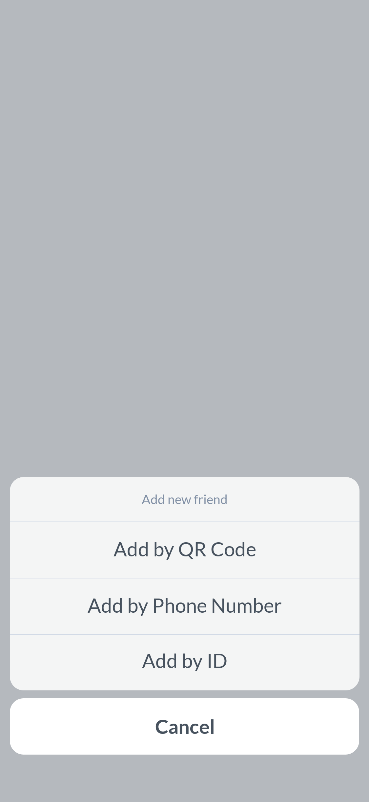
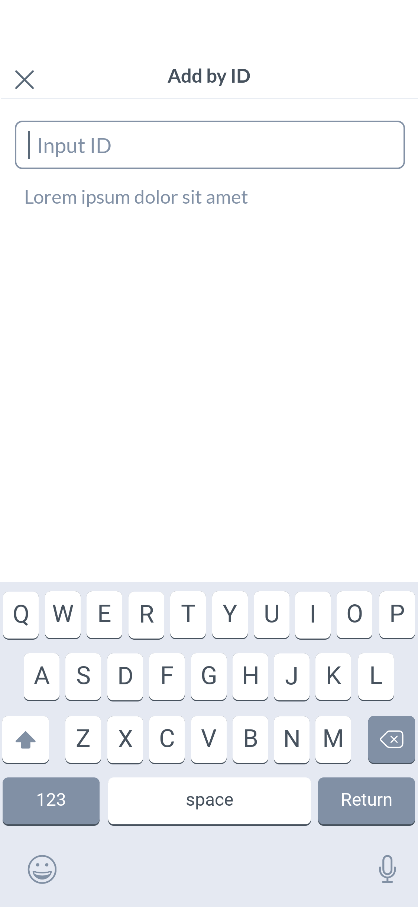
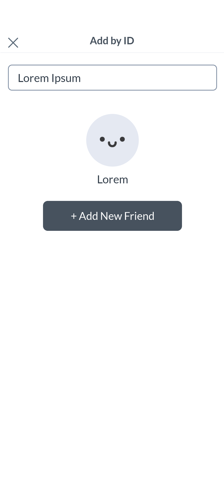
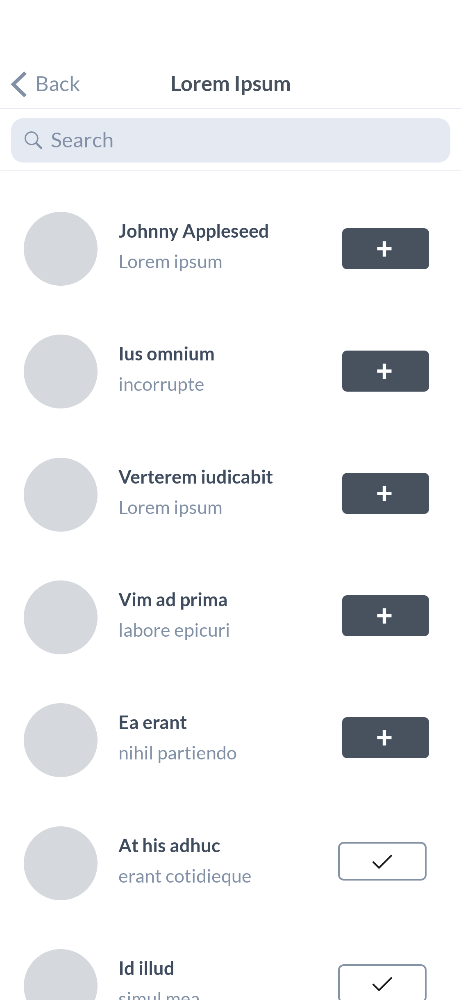
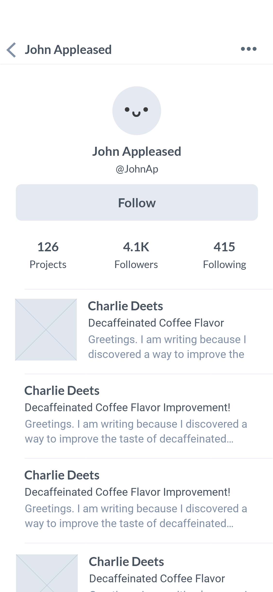
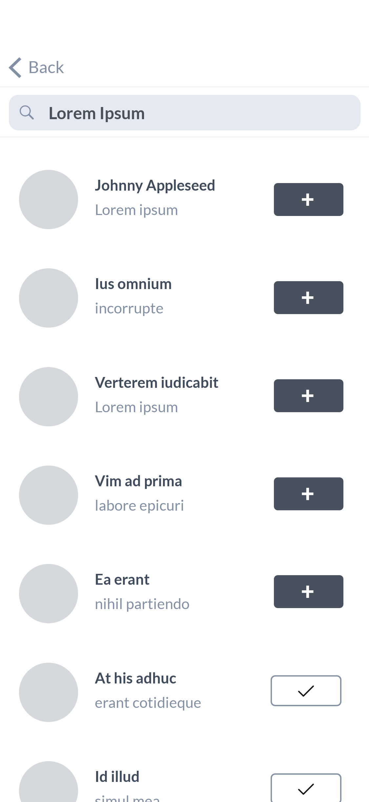

‘Networking’ 태스크는 네트워킹 할 다른 사용자 계정을 탐색하는 과업이다. 소셜 네트워킹 서비스나 구독 서비스 등에서 이미 네트워킹 중인 다른 사용자 계정 목록을 살펴보거나, 관심사 키워드나 이름 등으로 새롭게 네트워킹 할 계정 목록을 검색한 결과값이거나, 아이디, 코드나 전화번호 등 특정 사용자를 식별할 수 있는 고유한 값으로 찾아낸 계정을 탐색하는 기능이다.
활용 방법 →네트워킹 중인 사용자 목록이므로 소셜 네트워킹 서비스의 경우 나 혹은 다른 사용자의 프로필 페이지, 구독 서비스에서는 구독 계정 관리 페이지를 통해 접근한다. 사용자 탐색 후 사용 흐름이 유기적일 수 있도록 각 사용자 별 프로필 탐색, 네트워킹 취소 등의 확장 기능을 제공한다.
  네트워킹 기능을 제공하는 서비스의 검색창을 통해 접근할 수 있다. 일반적인 서비스는 서비스 내 메인 검색창으로 콘텐츠, 사용자 등 모든 검색값을 살펴볼 수 있는 통합 검색 기능을 제공하며 이 중 사용자 계정 목록의 검색값이 본 태스크의 유형이다.
 일반적으로 메시징 서비스의 새로운 계정 추가 기능의 옵션으로 제공된다. 옵션 선택 시 특정 사용자를 식별할 수 있는 고유한 값을 입력하는 페이지, 값 입력 후 해당 계정을 확인하는 페이지로 구성된다.
